Префектура Окинава · Наго · отель
The Busena Terrace: виллы на мысе Бусэна, где море весь день рядом
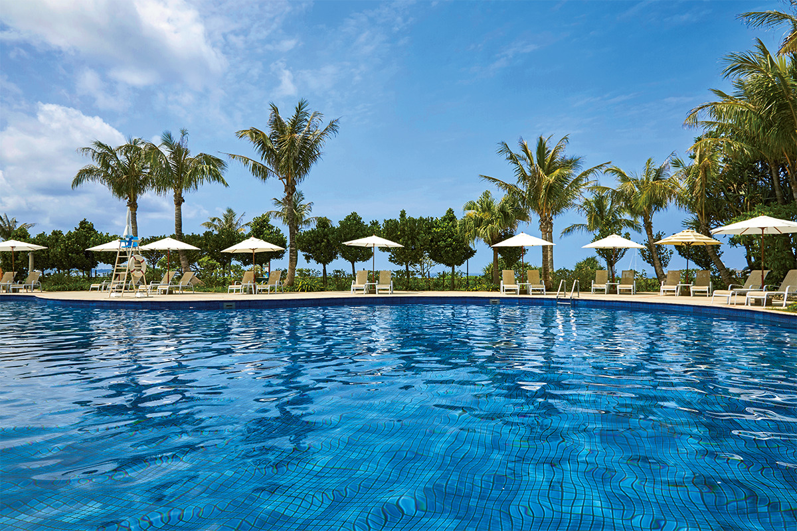
На севере острова Окинава, на мысе Бусэна среди изумрудного моря, стоит курорт The Busena Terrace. Самая тихая его часть, виллы Club Villa на оконечности мыса, создана для того, чтобы проводить весь день у моря и в море.
Курорт
Мыс Бусэна и виллы Club Villa
Среди множества курортных отелей Окинавы The Busena Terrace выделяется спокойной элегантностью. Сюда хочется возвращаться тем, кто многое повидал и знает цену хорошему отдыху. Над территорией поднимаются высокие прямые пальмы куба (ливистона), их силуэт стал эмблемой отеля. Здания открыты ветру, и море видно отовсюду.
Мыс Бусэна соседствует с конференц-центром «Банкоку Синрёкан», главной площадкой саммита «Большой восьмёрки» на Кюсю и Окинаве в 2000 году. В том же году на самом краю мыса открылись виллы Club Villa. Это 15 отдельных домов, и за садом у каждого начинается открытое море. Слышно только шум волн, шелест листьев и птиц. Атмосфера здесь совсем другая, чем в оживлённом главном корпусе отеля.
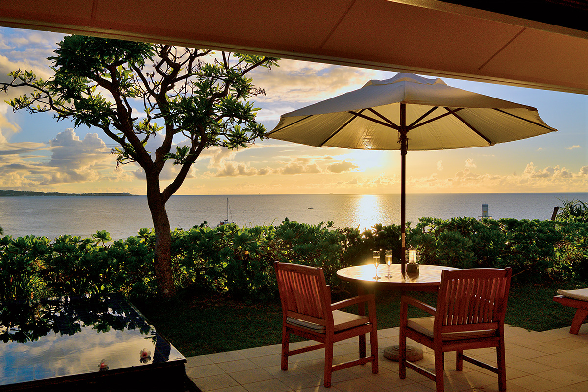
У большинства вилл есть свой бассейн, а ещё винный шкаф и мини-бар. Для гостей Club Villa работает отдельный лаунж, а завтрак можно заказать прямо в домик.
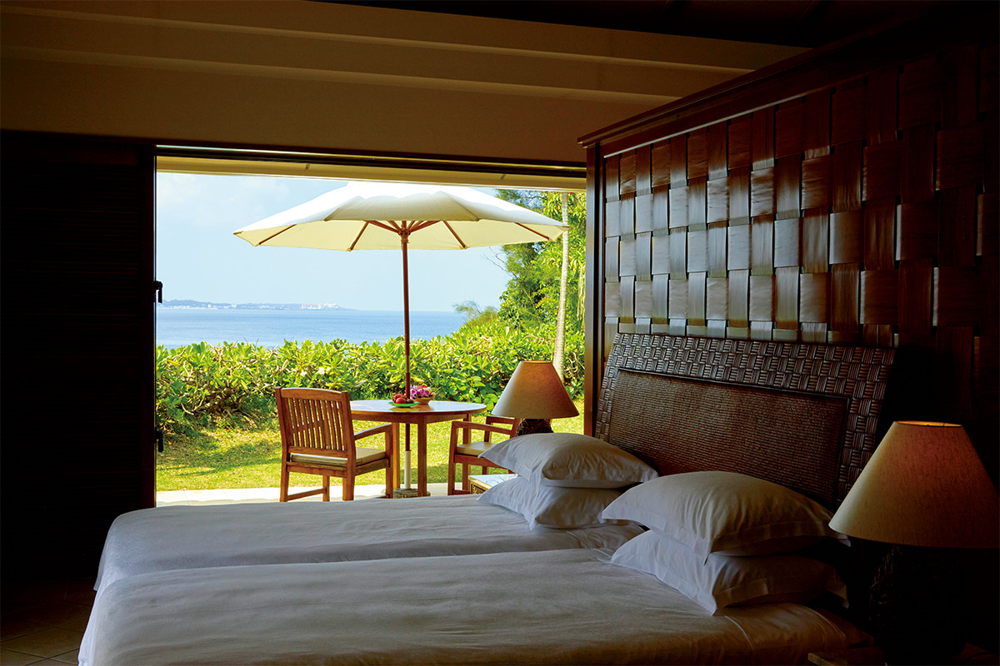
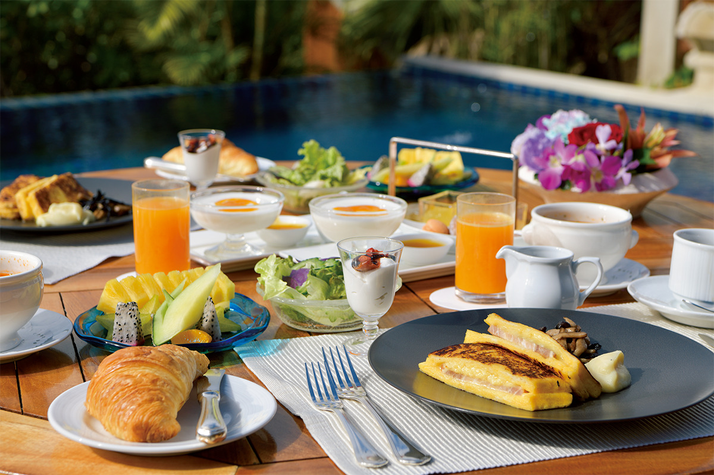
Море
Яхта на двоих до острова Минна
С виллы удобно отправиться в частный круиз. Отель сдаёт целиком роскошные яхты и катера, и тарифы у этих выходов разные. Day Charter и Sunset Charter для неспешного отдыха на палубе, Snorkel Charter для того, чтобы поплавать с маской у острова Минна.
Например, можно примерно за 30 минут домчаться по морю до Минны. Вода у острова одна из самых прозрачных на Окинаве: стоит надеть маску и лечь на воду, и под тобой коралловые рифы и пёстрые рыбы.
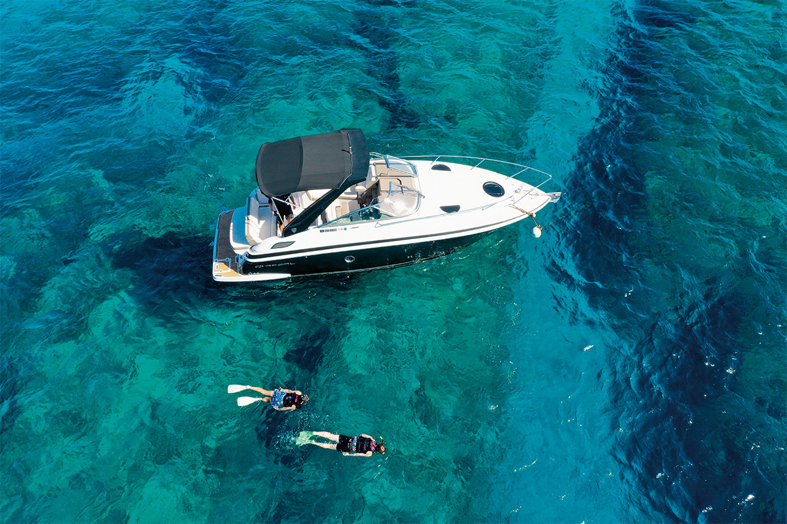
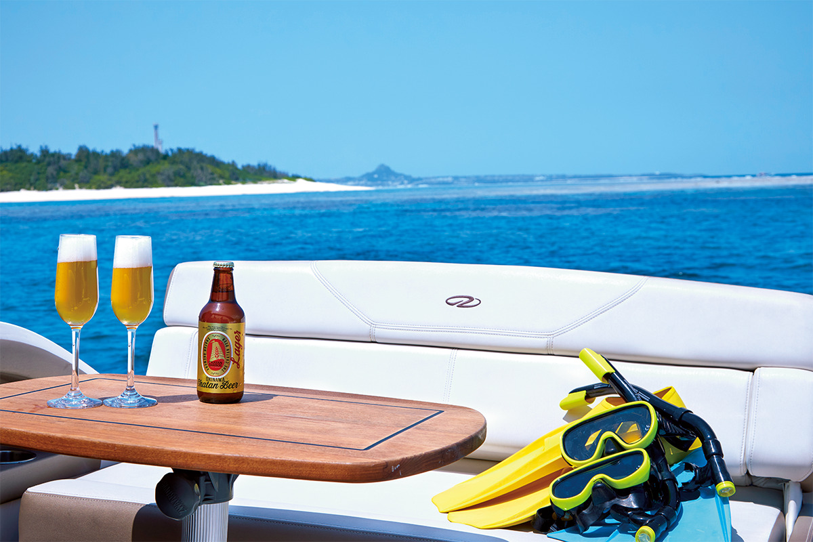
Вечер
Rumble Fish, саксофон на закате и бар «Дакибин»
Вернувшись на виллу и немного отдохнув, можно пойти в ресторан Rumble Fish на краю мыса. Здесь подают блюда из окинавских морепродуктов и крафтовое пиво, а по вечерам играет аккордеон. Весёлая атмосфера напоминает портовый городок где-то за границей: ритмичные мелодии сменяются лирическими, и обе находят отклик.
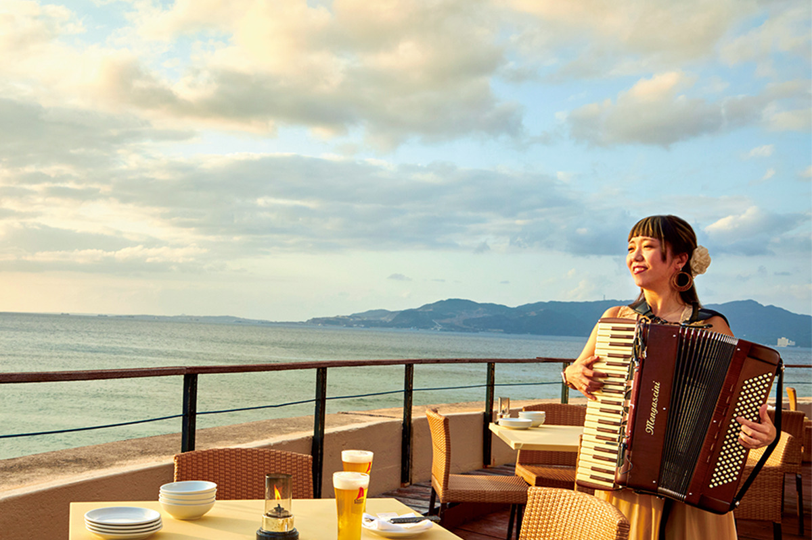
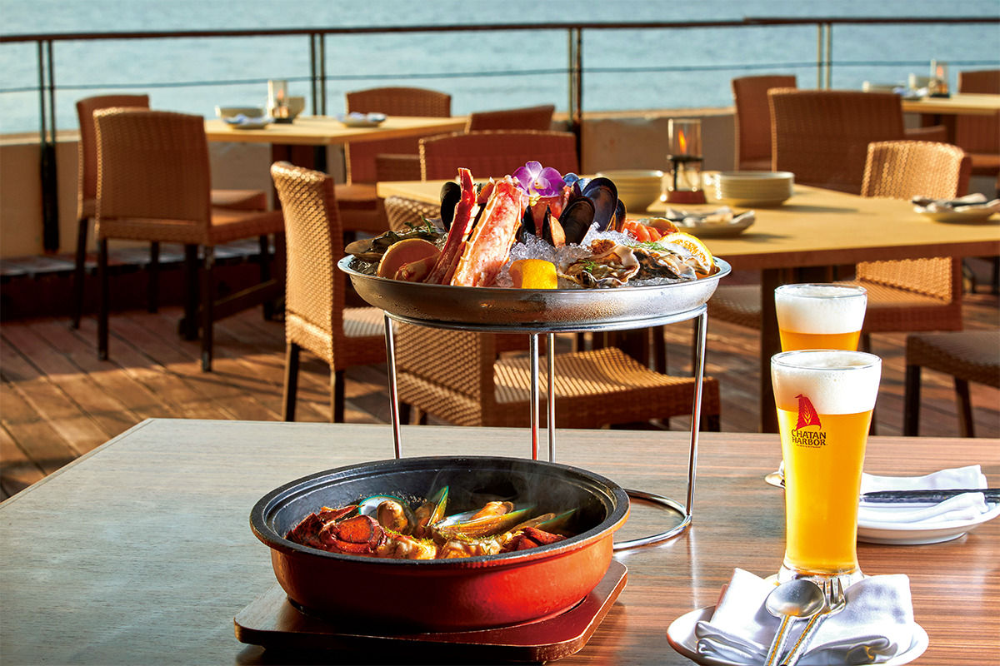
Где встречать закат, самый эффектный момент дня, решить непросто. Но стоит выбрать бассейн отеля: каждый вечер к заходу солнца здесь играет саксофонист, эта программа называется Sound of Sunset.
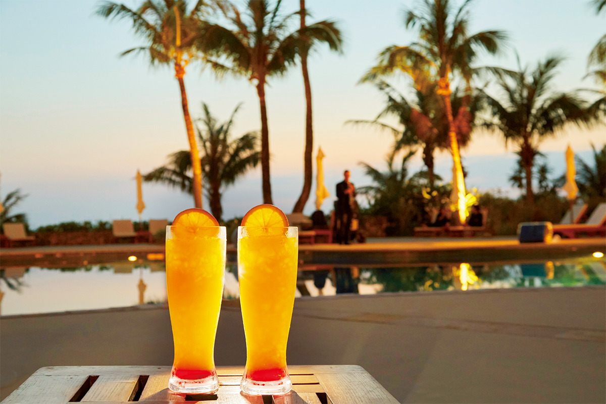
После ужина можно зайти ещё на один бокал в бар кусу «Дакибин». Здесь собрано около 50 видов авамори из разных районов префектуры, и их можно сравнивать по месту производства и выдержке.
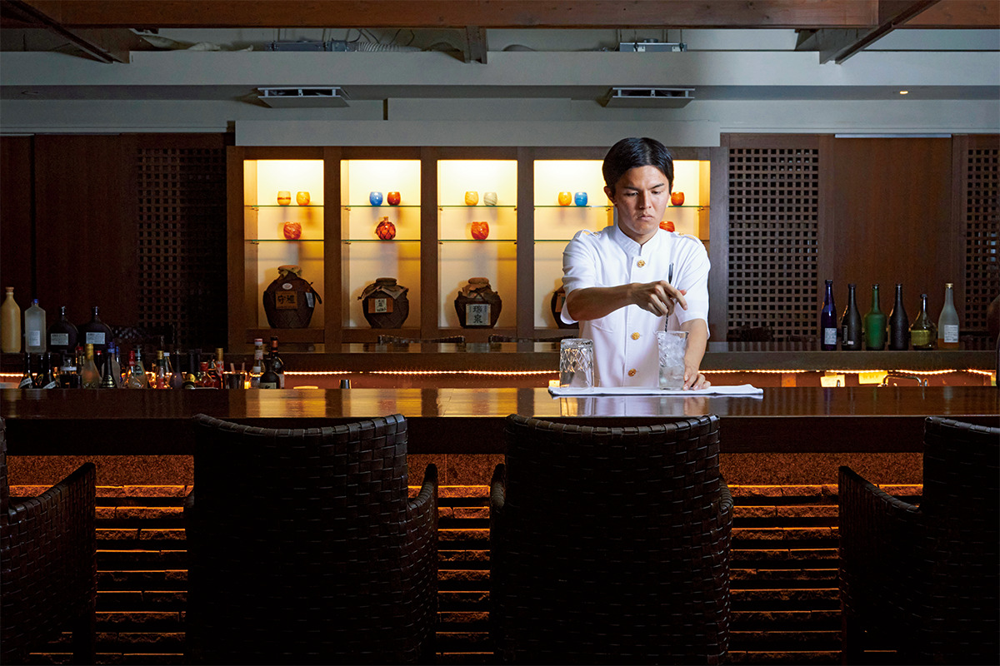
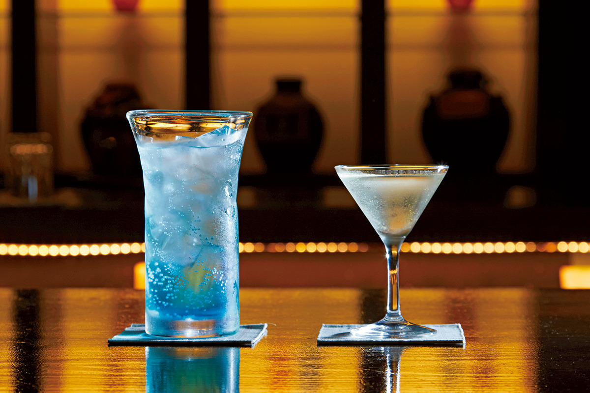
Утро
Пляж, лаунж и талассо-бассейн
На следующее утро можно позавтракать на вилле или провести время в элегантном клубном лаунже. Но сначала стоит пройтись к морю.
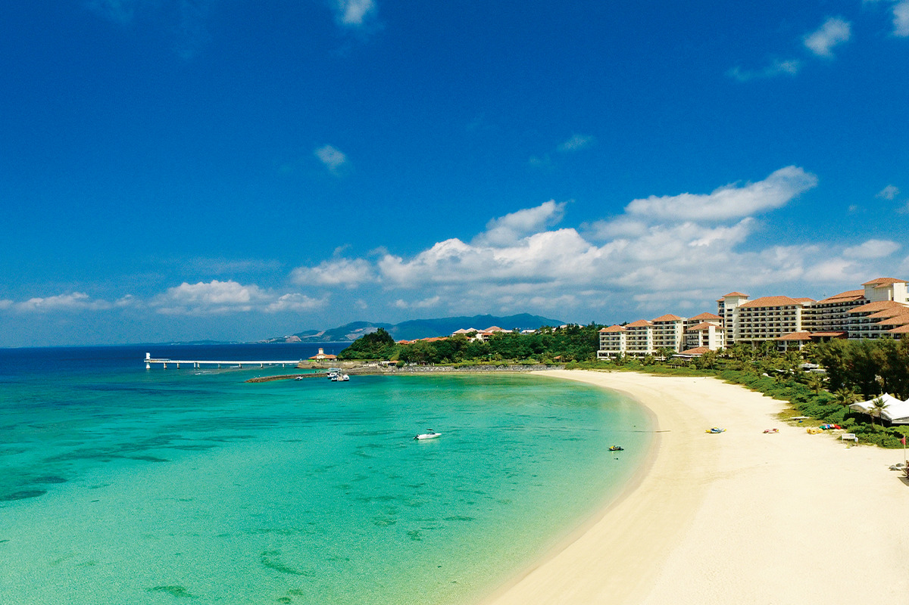
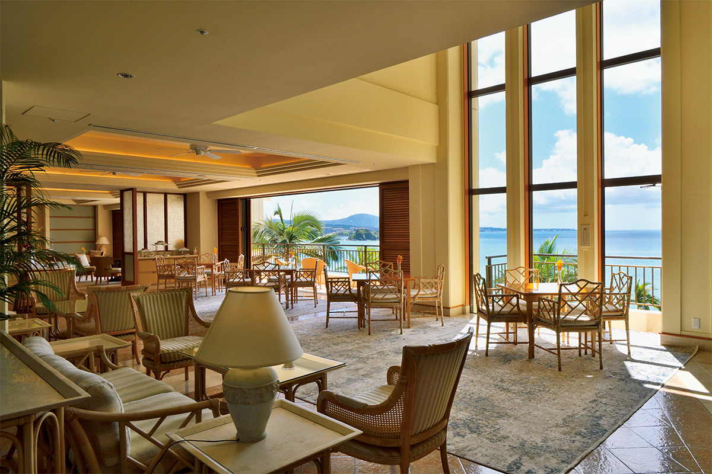
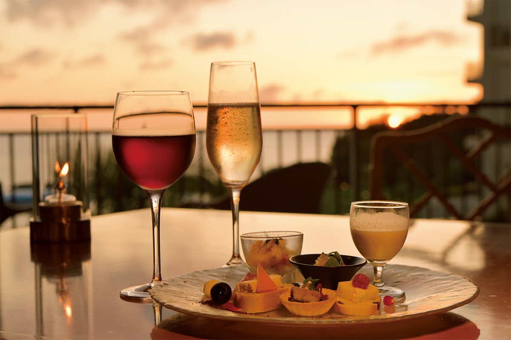
Обязательно попробуйте талассо-бассейн в отеле-соседе The Terrace Club at Busena, который стоит на том же мысе. Морскую воду для него берут прямо у мыса Бусэна. Бассейн состоит из 14 зон с температурой 33 и 36 °C. Гость переходит от одной к другой, струи разной силы и смена температуры приводят в равновесие вегетативную нервную систему. К концу круга расслабляются и тело, и голова, а ночью спится крепко.
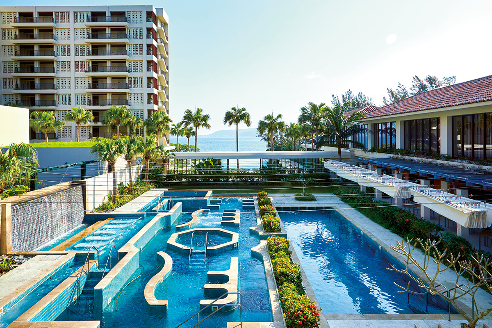
Лето, когда живёшь на вилле, весь день проводишь в море, а вечером море же тебя и успокаивает, запомнится надолго.
В 2024 году номер в отеле стоил от 84 000 иен за ночь с налогом и сервисным сбором. Кроме бассейнов, ресторанов и бара в отеле есть магазины и спа-кабинеты, к оплате принимают карты AMEX, DINERS, Master, VISA и другие.
The Busena Terrace
- Адрес
- префектура Окинава, Наго, Кисэ, 1808
- Телефон
- +81 980-51-1333
- Номера
- 408
- Цены / Вход
- от 84 000 иен за номер за ночь (с налогом и сервисным сбором)
- Заезд / выезд
- 14:00 / 11:00
- Как добраться
- от аэропорта Наха на машине по скоростной дороге Окинава около 1 часа 15 минут, на автобусе-лимузине из аэропорта около 1 часа 30 минут
Фото: Кэнта Ёсидзава.